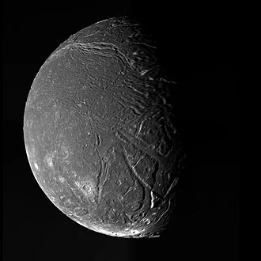

Ariel - Lua de Urano

Introdução e História
Ariel é uma das maiores luas naturais de Urano, descoberta em 24 de outubro de 1851 pelo astrônomo inglês William Lassell. Ela é conhecida por sua superfície relativamente brilhante e complexa em comparação com outras luas uranianas, o que já intrigou pesquisadores desde as primeiras observações.
A maior parte do conhecimento sobre Ariel vem de imagens obtidas durante o sobrevoo da sonda Voyager 2 em 1986, que revelou muitos detalhes da sua superfície e geologia.
Características Físicas: Diâmetro, Massa e Órbita
Ariel tem um diâmetro médio de aproximadamente 1.160 km, sendo a quarta maior lua de Urano.
Orbita Urano a cerca de 190.900 km do centro do planeta, completando uma volta em cerca de 2,52 dias terrestres, sempre com o mesmo lado voltado para o planeta (rotação síncrona).
Sua densidade sugere uma composição aproximadamente equilibrada de gelo de água e rocha.
Geologia
A superfície de Ariel mostra uma mistura de crateras de impacto, vales profundos e extensas falhas tectônicas, indicando que a lua passou por processos geológicos ativos no passado.
Algumas regiões parecem ter sofrido derretimento e fluxo de gelo, com material superficial mais suave sugerindo que atividade criovolcânica possa ter ocorrido há muito tempo.
Essas características fazem da superfície de Ariel uma das mais variadas entre as luas de Urano, com evidências de reanimação superficial e relevo complexo.
Missões Espaciais
A principal missão que nos trouxe informações detalhadas sobre Ariel foi a Voyager 2, que passou pelo sistema de Urano em 1986 e capturou imagens de parte da superfície da lua.
Desde então, não houve outra missão que retornasse mais dados de Ariel, mas o que foi obtido continua sendo a principal base de conhecimento científico sobre a lua, incluindo detalhes de sua topografia e variações geológicas.
Atmosfera e Exosfera
Ariel não possui uma atmosfera significativa nem uma exosfera detectável, como acontece com a maioria das pequenas luas geladas. Sua superfície está exposta diretamente ao ambiente ao redor de Urano.
Potencial de Habitabilidade
- Água Líquida: Pesquisas recentes sugerem que Ariel pode ter possuído um oceano profundo sob sua crosta gelada no passado, possivelmente ultrapassando centenas de quilômetros de profundidade.
- Fonte de Energia: Não há aquecimento suficiente atualmente por maré ou luz solar para manter água líquida na superfície ou próximo dela.
- Ingredientes Químicos: A composição de gelo e rocha fornece blocos químicos básicos, mas não há evidências de química biológica ativa.
Ariel não é considerado habitável, mas a possibilidade de um oceano interno passado torna-a um objeto de interesse para estudo futuro sobre a evolução de mundos gelados.
Curiosidades
Ariel é a mais brilhante das principais luas de Urano, com um albedo maior do que muitas outras luas geladas do Sistema Solar.
Os vales e fendas de Ariel se estendem por centenas de quilômetros, indicando um passado geologicamente ativo.
A lua recebe seu nome do personagem Ariel presente em obras de Shakespeare e do poeta Alexander Pope.
Origem do Nome
Ariel recebeu seu nome de um personagem mitológico/literário que aparece tanto na peça “A Tempestade”, de William Shakespeare, quanto no poema “The Rape of the Lock”, de Alexander Pope — simbolizando espírito livre e leveza.
O uso desse nome segue a tradição de nomear as luas de Urano com figuras retiradas de obras literárias clássicas, refletindo a conexão entre cultura humana e a astronomia.
Referências
- Britannica. Ariel (lua de Urano). Disponível em: https://www.britannica.com/topic/Ariel-astronomy. Acesso em: 26 dez. 2025.
- Wikipedia. Ariel (satélite natural). Disponível em: https://pt.wikipedia.org/wiki/Ariel_%28sat%C3%A9lite_natural%29. Acesso em: 26 dez. 2025.
- Pesquisa científica sobre oceano em Ariel. Disponível em: https://phys.org/news/2025-09-uranian-moon-ariel-surface-features.html. Acesso em: 26 dez. 2025.